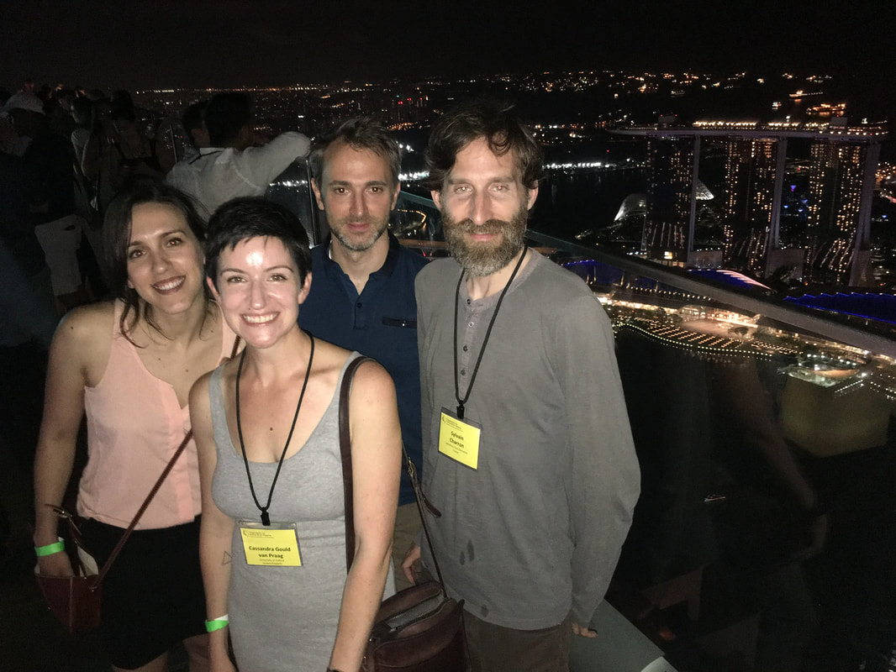

(or, How I became an advocate of Open Science in 5 days.) Cass It’s the final day of OHBM 2018, and I’m tired. I’m also excited, enthusiastic and exhilarated. I’ve had my first real taste of the Open Science community, and I want more! What follows is an honest account of how I went from feelings of scepticism and ambivalence about Open Science, to a flag waving advocate. My hope is that you might read my story and find it in some way relatable. Then maybe, just maybe, you’ll join me in the Open Science Room next year. When I registered for OHBM, I intended to sign up for the “Hackathon”. I wanted to improve my python programming skills and hoped I might make a few buddies along the way. Alas, the Hackathon was sold out, and if I wanted to know more I’d have to “make do” with attending the one-hour introduction session: Brain Hacking 101. “But do stop by the Open Science Room while you’re here!” the organizer said. Open Science wasn’t a priority for me, so I wasn’t sure if I’d find the time. I started the conference with some educational sessions. People kept mentioning their “GitHub” pages, but I didn’t take much notice. Vince Calhoun presented some work using dynamic functional connectivity (dFC), and I felt the rumblings of a new project brewing. I knew I could apply this method to some data I had sitting in a drawer and it might turn out to be interesting. And then there was a link to his GitHub page. I scribbled in my notebook: “dFC toolbox available, with documentation and examples!” The toolbox was written in MATLAB (phew!), and was an extension of something I was already familiar with. Next I headed to Brain Hack 101, to fill the lunch-hour void. There was an unassuming looking guy stood at the front, and he was clearly the super-programmer sort. This was Greg Kiar. He was patient with the attendees and our entry-level questions, and in one hour he explained a few terms that I had heard being thrown around but not really understood:
BIDS (Brain Imaging Data Structure) got triple underlined in my notebook. I had been looking for a way to better structure the masses of data I’d inherited, and here was a fully-fledged and well organised system which I could use. “One less job for me!”, I thought. Clearly a lot of effort had gone into defining BIDS, and who was I to try and reinvent the wheel? Someone else has already done a fantastic job in creating the system and implementation, and they were giving it to me for free! fmriprep got triple underlined as well. This was a tool for doing some kick-ass preprocessing, made by the masters and shared freely with a ton of documentation and support. I was hoping to come away from the meeting prepared to build a tool to improve the efficiency of preprocessing the data collected by our group. In fmriprep, I’d found another fully-fledged tool to do exactly what I was looking for, and do it significantly better than I could with the time and resources available to me. At the end of the session I was a bit more confident in my understanding of what was available and how I could make use of it. More importantly, I had ticked two of my “OHBM Outcome” boxes in discovering BIDS and fmriprep. I thanked Greg after the session, specifically because he had suggested I came here and I had found it really useful. He seemed grateful for the feedback. The OHBM meeting continued and I found myself in the Open Science room again and again. This was the place where I could find out about real, tangible “things” which could elevate my research. They also had bean bags and power sockets, and there was an atmosphere of generosity which was very pleasant when you’re surrounded by some of the most eminent people in your field.  Cass attending the OHBM trainee night in Singapore. The real turning point was attending a session described as “Discussion: How to improve Multi Echo denoising”. I expected a panel, with me taking notes. What I got was an invitation to join a (physical) circle of 8-10 very impressive people as they attempted to make something (TEDANA) better, by working together in a friendly, communicative and organised way. The session started, as these circle things do, with each of us saying who we were and what we did with multi echo. Most people seemed to know each other already, at least by association, but the Chairs of the sociocratic circle (Elizabeth DuPre and Dan Handwerker) made a point of ensuring everyone was on the same page and that there were no assumptions. I was clearly the least technically experienced person in the room, but they were nice and attempted to actively engage me in the discussion. Susan Bookheimer had told us that women in science need to be outspoken, so I made an effort to speak out. To my surprise, my opinion was welcomed. I learned that people like them really do need to hear from people like me; I assisted in the development of this tool through virtue of my inexperience. My original motivation for attending the session was not altruistic: ”if the tools are going to develop I want to be early on the curve to adopt them”. I had intended to be a passive recipient of their talent and hard work. At some point it became clear that this wasn’t going to be the case. I was skilfully guided into volunteering my services in improving the documentation of the tool, but I wasn’t too aggrieved about the extra workload ‘imposed’ upon me. I was probably going to read the “how to” guides anyway, to get TEDANA working with my data, so all I’d have to do is ‘track changes’ and make a few suggestions. This seemed a pretty reasonable exchange, but they weren’t taking my commitment lightly. They wrote my name down next to the action on the google doc which was being typed up for all to see. I have no doubt, however, that if I had kept my head down the group wouldn’t have push me to be involved. In truth, I wanted to be a member of this group, but I didn’t feel like I had anything to offer. When the allotted time for discussion was over, I approached Kirstie Whitaker to thank her for her contributions in different sessions, and for saying out loud things which I was too nervous to say. She spoke with strength, clarity and precision. She seemed to embody all the things I want to see in the field, and I wanted her to know I was appreciative. Turns out we have some shared research interests and she was keen to work with me. She treated me with respect and encouragement, and seemed willing for me to benefit from her experience. I was starting to notice a theme: The people in the Open Science Room were really nice. They were kind, considerate, generous, and welcoming. They were also really skilled scientists. The kind of top-of-your-game people who anyone would be honoured to work with and learn from. They genuinely cared about empowering others to foster more efficient, more effective and higher quality research. They cared about non-science things that are important to me, like gender equality, privilege and dubious political decisions. I wanted to work with them, and they wanted to work with me. Though my initial motivations for engaging with Open Science were purely selfish, I came to appreciate that if I go a little bit further and contribute back to the system we can all do more effective research. Ultimately, this is good for advancing our understanding. I am reminded that the reason I love this job is not just because of the creative freedom and intellectual stimulation is provides, nor the opportunity to go to cool places and meet awesome people. It all boils down to helping those individuals whose brains work differently, or maybe not quite as they should, and trying to help them exist happily in this confusing and sometimes dangerous world. I have come away with the firm belief that Open Science is Social Justice, and that is something I want to be a part of. I am also reaffirmed of the good that we can do as a community, if we are kind and generous with each other. Before this week, I was not a fan of Open Science. It felt like a bucket of extra work in my already stretched schedule. It also played on my insecurities as an early career researcher, to meet the demands of publishing and the fear that I may be exposed for being no good (I believe that’s called Imposter Syndrome). What I’ve come to learn is that I’ve already benefited massively from Open Science by using a long list of tools generated through many hours of skill, labour and dedication (see below for a list which grows longer the more I think about it). All of these have been free to me and required little more than a citation, if anything. After this whirlwind of a conference I am now a strong advocate of Open Science, and I think you should be too. You don’t have to take my word for it, just come to the Open Science room at the OHBM Annual Meeting in Rome next year and see how you get on. They have bean bags and power sockets, and you might even have some emotions which help you do research.
Ways I have personally benefited from Open Science, without being aware of or appreciating: 1) SPM 2) FSL 3) OBART (NITRIC’s Online Brain Atlas Reconciliation Tool) 4) Chris Rorden’s mricron, mricro, dcm2nii, and fmri simulator 5) The 1,000,000 times when I’ve searched the internet for “how do I do x in MATLAB/Linux/bash?”
1 Comment
Pierre Bellec
7/2/2018 06:20:50 am
Beautifully written and inspiring text! I hope this is the start of a long (open) scientific journey! Your comment will be posted after it is approved.
Leave a Reply. |
BLOG HOME
Archives
August 2023
|
 RSS Feed
RSS Feed